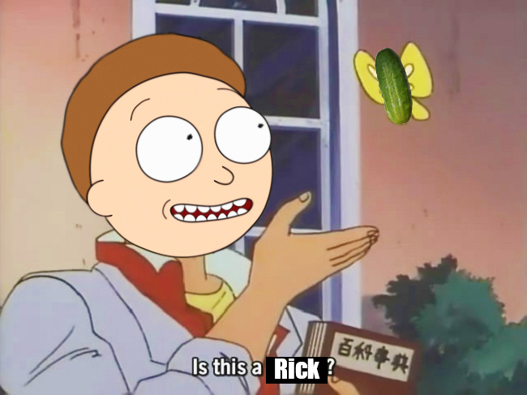

by Sosofarsosofie
App: Adobe Photoshop
​I believe this mash up is not only a commentary on Morty but on perspective. The "Is this a pigeon?" meme inherently relies on the idea that just because two things have the same trait doesn't mean they are the same. Morty (the head I photo shopped onto the body} is a somewhat lost character when it comes to his Grandpa Rick. I'm using the combination of the memes to express Morty's confusion and how little he knows about his grandpa. I believe the combining of the Pickle Rick meme and "Is this a pigeon" emphasizes on the confusion people experience when dealing with things that seem similar, but are radically different through personal connection.
